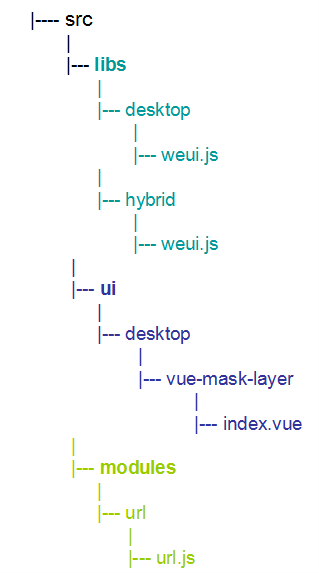
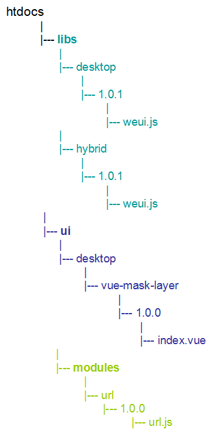
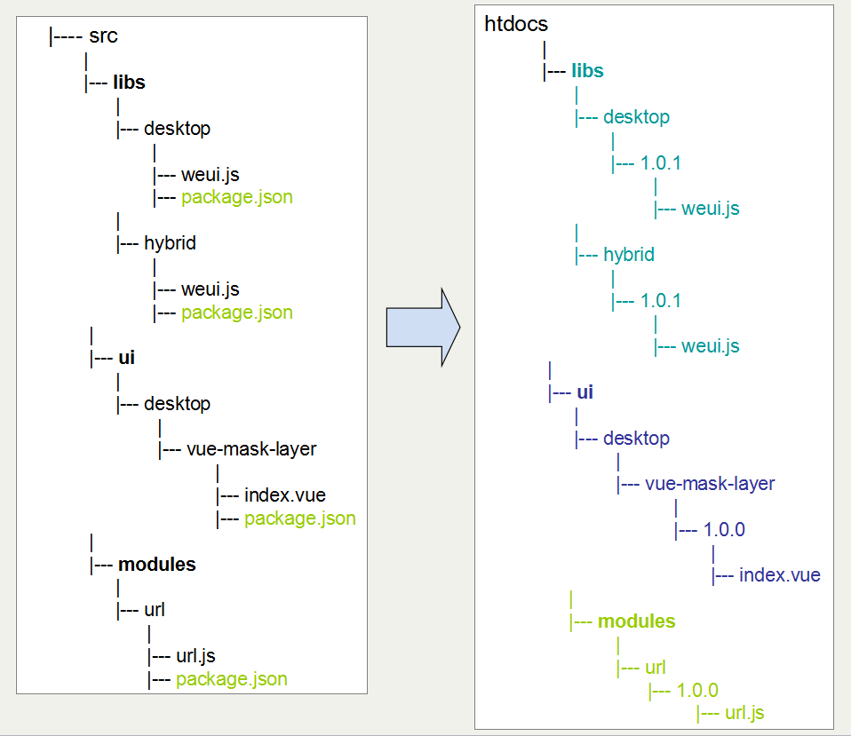
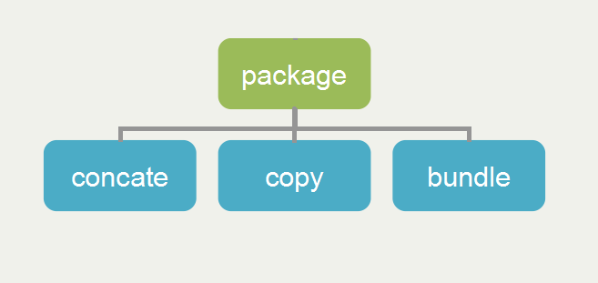
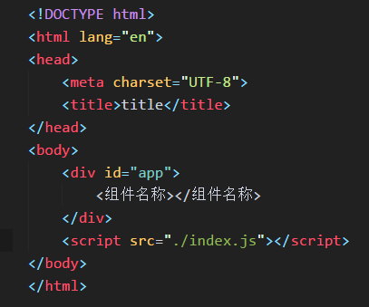
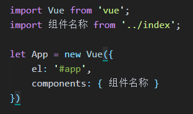
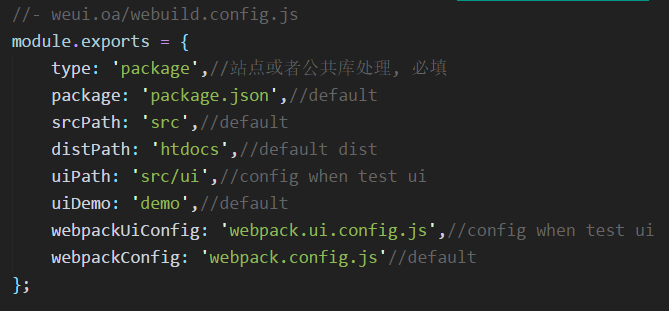
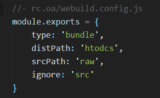
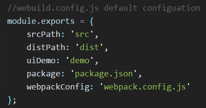

webuild
build everything we want
Enjoy Chan(平台产品前端)
目录
- webuild的产生
- webuild各站点构建
- webuild命令行使用
- webuild开发
- webuild总结
schema
站点
- weui.oa: 公共站点，存放html、css、image，存放vue组件、libs、modules
- rc.oa: 代表业务站点，存放业务相关js
weui.oa
|
|---- htdocs (站点访问指向)
|
|---- src (前端)
|
|---- template (重构)
rc.oa
|
|---- htdocs (站点访问指向)
|
|---- src (php文件)
|
|---- resource (业务js)
weui.oa/src
|
|---- libs (公共库文件,ex: vue.js、vue-resource.js)
|
|---- modules (公用js功能模块)
|
|---- ui (公用vue组件)
weui.oa/src vs weui.oa/htdocs
 版本、构建信息 package.json

weui.js
//weui.js
import Vue from 'vue'
import VueResource from 'vue-resource'
export default {
Vue: Vue,
VueResource: VueResource
}
//业务js
import {Vue, VueResource} from 'weui/libs/desktop/weui'
//weui.js, 文件合并
[vue, vue-resource]
//业务js
import Vue from 'vue'
import VueResource from 'vue-resource'
bundle、concate
业务js示例
import Vue from 'vue';//weui.oa/htdocs/libs
import VueMaskLayer from 'UI/desktop/vue-mask-layer/1.0.0';//weui.oa/htdocs/ui
import VueWidget from './src/widget.vue';//自定义组件
var app = new Vue({
el: '#app',
data: {
isMaskShow: false
},
components: { VueWidget, VueMaskLayer}
});
bundle
功能点
- copy： 文件复制
- concate： 文件合并
- bundle： 文件打包
- ui: 调试开发组件、demo生成
- package: 版本信息 package.json
webuild package
根据package.json执行concate、copy、bundle操作
weui.oa
|
|---- htdocs
|
|---- src
|
|---- template
weui/src
weui/src
package.json - concat
{
"type": "concat",
"output": [
{
"version": "1.0.0",
"name": "vue-libs",
"entry": ["vue.js", "vue-http.js"]
},
{
"version": "1.0.1",
"name": "vue-lib2-v2",
"entry": ["vue.js", "vue-http.js"]
}
]
}
package.json - copy
{
"type": "copy",
"output": [
{
"version": "1.0.0"
}
]
}
package.json - bundle
{
"type": "bundle",
"output": [
{
"version": "1.0.1",
"entry": "weui.js"
}
]
}
webuild ui
搭建vue component开发的环境以及生成demo
webuild ui执行内容
- demo文件是否存在，是则忽略第二步
- 新建demo/index.html、demo/index.js文件
- 开启webpack-dev-server, 监听指定端口
模板
 vue组件
//- path error
webuild bundle
查找入口js并使用webpack打包
rc.oa
|
|---- htdocs
|
|---- src
|
|---- resource
业务入口js
import Vue from 'vue';//- libs
import Toast from 'UI/desktop/vue-toast/1.0.0';//- weui.oa/htdocs/ui
import VueMaskLayer from 'UI/desktop/vue-mask-layer/1.0.0'; //- weui.oa/htdocs/ui
import VueMaskLayer from 'Modules/url/1.0.0'; //- weui.oa/htdocs/modules
import VueWidget from './src/widget.vue';//- rc.oa
var app = new Vue({
el: '#app',
data: {
btn: '点我提示',
isMaskShow: false
},
components: { VueWidget, VueMaskLayer},
methods: {
showMsg() {
this.isMaskShow = true;
this.toast.$error('提示信息1');
},
showAnotherMsg() {
var a = this.toast.$loading('提示信息2');
var This = this;
setTimeout(() => {
This.toast.$hideMessage(a);
}, 3000);
}
}
});
页面引用路径
//- 静态资源
//- vue component style, by extract-css loader
//- image path rule
 //- weui.oa assets, begin with `//weui.oa`
//- current project assets, begin with `/res/**`
//- weui.oa assets, begin with `//weui.oa`
//- current project assets, begin with `/res/**`
 //- weui.oa assets, begin with `//weui.oa`
//- current project assets, begin with `/res/**`
//- weui.oa assets, begin with `//weui.oa`
//- current project assets, begin with `/res/**`
* 不要使用node >= 6.0 and <= 6.1
Module build failed: Error: "extract-text-webpack-plugin" loader is used without the corresponding plugin, refer to https://github.com/webpack/extract-text-webpack-plugin for the usage example
webuild 静态资源路径添加版本号
//- before
body {
background-img: url('//weui.oa.com/img/list.png')
}
//- after
body {
background-img: url('//weui.oa.com/img/list.png?v=b99a44d')
}
- 查找所有图片，并根据内容计算对应的MD5值取7位
- 遍历所有的css文件内容，查找图片路径引用并替换成带MD5值的路径
- 开发模式，开启server、livereload, 根目录为htdocs、template
- 完整构建，引用webuild为css文件添加hash
- 处理引用路径问题
webuild usage
command: package、bundle、ui
options: dev、product、watch、server
port
示例
- webuild package
- webuild package modules/url
- webuild bundle
- webuild bundle res/static/order/list -d
- webuild ui desktop/vue-mask-layer -s
webuild.config.js
  webuild开发
- 要求node版本超过4
- 既做命令也做API
- 依赖webpack
- 使用co控制流程
Next
- 提炼共性：读取package.json
- 代码重构：node升级、webpack升级、error catch等
- 文件自动添加到对应的php文件中
- 使用git log
- ......
the end
匠人
thanks for your attention～👀